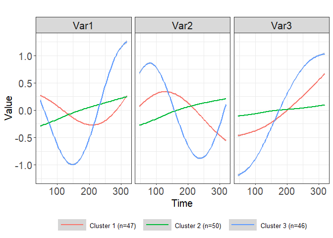

TPSClus is an R package designed to implmente fuzzy clustering of multivariate longitudinal data using tensor product smoothing splines. The TPSfit() function fits the splines to three or more variables that are measured repeatedly over time. The cluster.fitted() or cluster.coefs() functions can then be used to identify fuzzy clusters in the data. Lastly, the FKM.glm() function can be used to generate a generalized linear model for a distal outcome using the fuzzy clusters and other covariates as predictors. A number of plot options are available for visualization of the data and clusters.
Installation
You can install the development version of TPSClus like so (need to update):
devtools::install_github("silivingston/TPSClus", dependencies = TRUE, build_vignettes = TRUE)Example
Basic example of flow using built-in simulated dataset:
Fit splines to multivariate data:
library(TPSClus)
data(TS.sim)
fitsplines2 <- TPSfit(TS.sim, vars=c("Var1", "Var2", "Var3"),
time="Time", ID="SubjectID", knots_time=c(0, 91, 182, 273, 365),
fit_times=c(46, 91, 137, 182, 228, 273, 319))Run fuzzy clustering algorithm on the smoothed data using 3 clusters:
clusters1 <- cluster.fitted(fitsplines2, k=3, m=1.3, seed=12345, RS=5, noise=TRUE)
summary(clusters1)
#> cluster.fitted(TPSdata = fitsplines2, k = 3, m = 1.3, noise = TRUE,
#> seed = 12345, RS = 5)
#>
#> 150 subjects clustered into 3 clusters + noise cluster using m = 1.3
#> Clusters based on fitted values at times 46 91 137 182 228 273 319
#> and slopes between points
#>
#> Cluster summary:
#> Cl.size Min.degree Max.degree Mean.degree
#> Clus1 47 0.489 1 0.983
#> Clus2 50 0.483 1 0.980
#> Clus3 46 0.862 1 0.991
#> Noise 7 0.933 1 0.980
#>
#> Component 'FKM_TPS' contains the fuzzy clustering details from package 'fclust'.
#> Components of 'FKM_TPS':
#> [1] "U" "H" "F" "clus" "medoid" "value"
#> [7] "criterion" "iter" "k" "m" "ent" "b"
#> [13] "vp" "delta" "stand" "Xca" "X" "D"
#> [19] "call"
#>
#> Cluster validity indices:
#> PC PE MPC SIL SIL.F XB
#> 0.92979979 0.04137373 0.89469968 0.46242525 0.48364829 0.24117979
#>
#> Output dataset 'FKM_TPS_U' contains degree of cluster membership and modal
#> cluster assignment for each object.
#> Head of dataset 'FKM_TPS_U':
#> Id2 SubjectID Clus1 Clus2 Clus3 Noise ClusModal
#> 1 1 17 1.309679e-05 0.9999862733 8.929241e-08 5.406552e-07 2
#> 2 2 19 9.665821e-04 0.0004435711 9.972477e-01 1.342137e-03 3
#> 3 3 34 4.719129e-06 0.9999952117 1.255723e-08 5.657849e-08 2
#> 4 4 52 1.188519e-05 0.9999878294 4.352554e-08 2.418527e-07 2
#> 5 5 55 6.427492e-04 0.0003088823 9.982691e-01 7.792961e-04 3
#> 6 6 83 3.651509e-03 0.0012300893 9.802217e-01 1.489672e-02 3Plot the mean cluster trajectories:
plot(clusters1, legend_label_size=10)
#> `geom_smooth()` using method = 'gam' and formula 'y ~ s(x, bs = "cs")'
Fit a GLM using the clusters and other covariates as predictors:
model <- FKM.glm(clusters1, TS.sim, y="outcome", covariates=c("x1", "x2"),
family="binomial")
summary(model)
#> Full model:
#> Formula (f1): outcome ~ Clus2 + Clus3 + Noise + x1 + x2
#> Family: binomial
#>
#> Call:
#> glm(formula = f1, family = family, data = data3)
#>
#> Deviance Residuals:
#> Min 1Q Median 3Q Max
#> -1.97164 -0.22557 -0.02179 0.13942 2.11563
#>
#> Coefficients:
#> Estimate Std. Error z value Pr(>|z|)
#> (Intercept) 10.42476 2.11640 4.926 8.41e-07 ***
#> Clus2 1.15006 0.86491 1.330 0.1836
#> Clus3 2.37069 1.00594 2.357 0.0184 *
#> Noise 3.52023 1.73903 2.024 0.0429 *
#> x1 0.73342 0.68421 1.072 0.2838
#> x2 -0.27902 0.05381 -5.185 2.16e-07 ***
#> ---
#> Signif. codes: 0 '***' 0.001 '**' 0.01 '*' 0.05 '.' 0.1 ' ' 1
#>
#> (Dispersion parameter for binomial family taken to be 1)
#>
#> Null deviance: 201.065 on 149 degrees of freedom
#> Residual deviance: 63.838 on 144 degrees of freedom
#> AIC: 75.838
#>
#> Number of Fisher Scoring iterations: 7
#>
#>
#> ANOVA chi-square p-value for significance of clusters in model:
#> 0.03360065Predict the outcome for a new dataset:
data(TS.sim.new)
predicted <- predict(model, TS.sim.new)
head(predicted)
#> SubjectID x1 x2 Id2 Clus1 Clus2 Clus3 Noise
#> 1 1626 0 23.5 1 3.263066e-06 0.999996610 1.915778e-08 1.075745e-07
#> 2 1627 0 87.2 2 1.091953e-02 0.004496758 9.803848e-01 4.198949e-03
#> 3 1629 0 59.3 3 6.915108e-02 0.045432056 8.668493e-01 1.856759e-02
#> 4 1634 0 36.3 4 2.411935e-07 0.999999754 8.120729e-10 3.633010e-09
#> 5 1641 1 49.6 5 2.365786e-01 0.119455660 1.033256e-02 6.336331e-01
#> 6 1650 0 34.1 6 4.438164e-09 0.999999995 1.583192e-11 6.998691e-11
#> ClusModal predicted
#> 1 2 9.934247e-01
#> 2 3 9.524077e-06
#> 3 3 1.891861e-02
#> 4 2 8.094402e-01
#> 5 0 4.282913e-01
#> 6 2 8.869764e-01